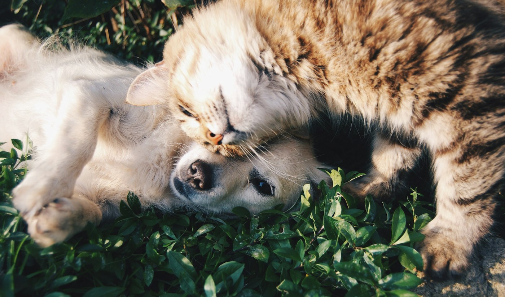
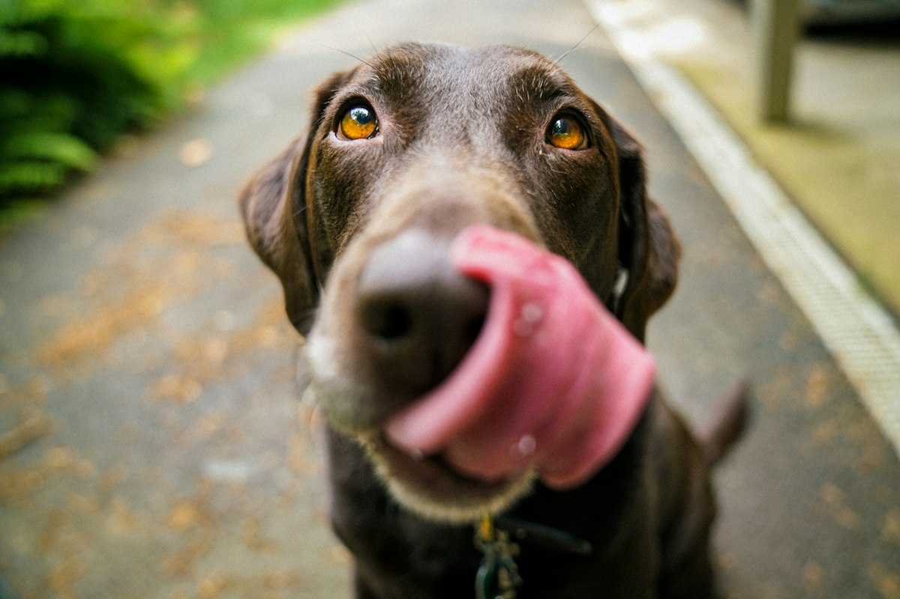
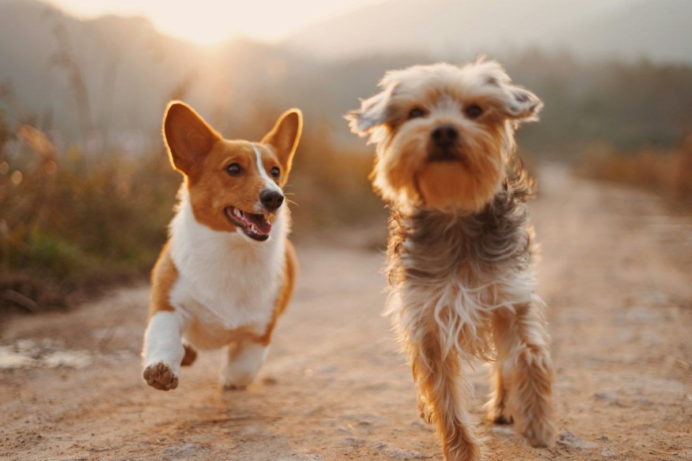

Rescatar
Atención a urgencias, colonias felinas con método CES y difusión de casos.
Rescatar · Cuidar · Encontrar un hogar
Grupo Nebak trabaja en Irún desde 2018 para rescatar, cuidar y encontrar hogar a animales abandonados. Mediante el método CES y la adopción responsable, damos una nueva vida a gatos y perros que lo necesitan.

Cómo ayudamos
Nuestro trabajo se centra en aliviar el sufrimiento de los animales callejeros y darles la oportunidad de volver a confiar en las personas.
Hecho con personas reales, no con plantillas.
Cada rescate, acogida y adopción se construye con tiempo, seguimiento y cariño en Irún.
Atención a urgencias, colonias felinas con método CES y difusión de casos.
Alimentación, vet., desparasitación y esterilización en casas de acogida.
Adopción responsable con protocolo y seguimiento para cada animal.
Sobre Nebak
Desde 2018 en Irún: cuidamos colonias con el método CES, colaboramos con el albergue municipal y buscamos hogares seguros para perros y gatos.

Animales que esperan
Cada historia es única. Algunos buscan adopción, otros una casa de acogida temporal. Conócelos y ayúdanos a difundir.


Tres gatos adultos tranquilos y cariñosos. Gastos cubiertos y remuneración.
Conocer historia →Puedes marcar la diferencia
Adoptar, ofrecer una casa de acogida, hacer una donación o ser voluntario/a. Todas las formas de ayuda son fundamentales para seguir rescatando y cuidando.
Colabora
Tu tiempo, tu hogar o tu apoyo hacen posible que sigamos adelante.
Hogar definitivo con un proceso responsable, acompañíado y pensado para el bienestar del animal.
Ver protocolo →Hogar temporal mientras encuentran familia. Gastos veterinarios cubiertos por la protectora.
Ser casa de acogida →Aportaciones puntuales o periódicas, Teaming y donación de materiales para seguir ayudando.
Ver formas de ayudar →Colonias, rescates, traslados al veterinario y construcción de casetas.
Únete al equipo →Actualidad
Campañas, urgencias y noticias para dar visibilidad a los animales que lo necesitan.
Contacto
Si quieres adoptar, acoger, ser voluntario, donar o tienes información sobre un animal, escríbenos. Te responderemos lo antes posible.
Email: nebakadopciones@gmail.com
Teléfonos: 625 140 588 / 600 042 594 / 659 487 771
Dirección: Calle Santiago 27 1º izq, 20304 Irún, Gipuzkoa

Dónde estamos